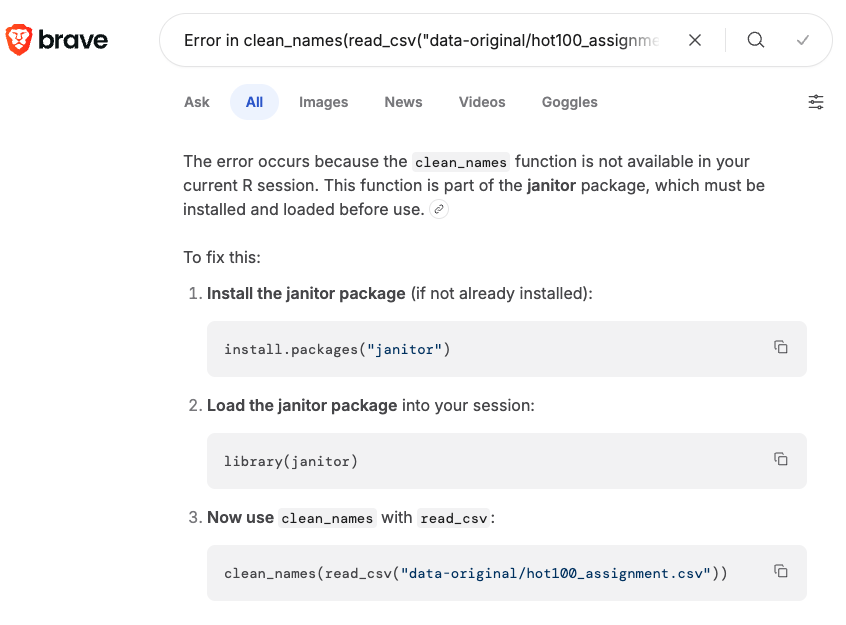
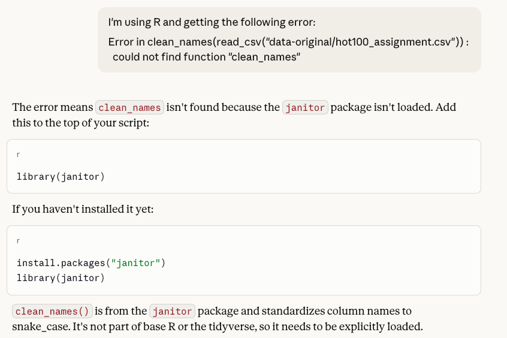
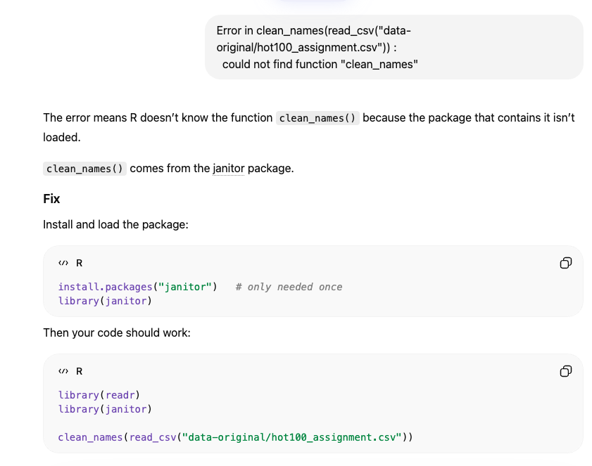
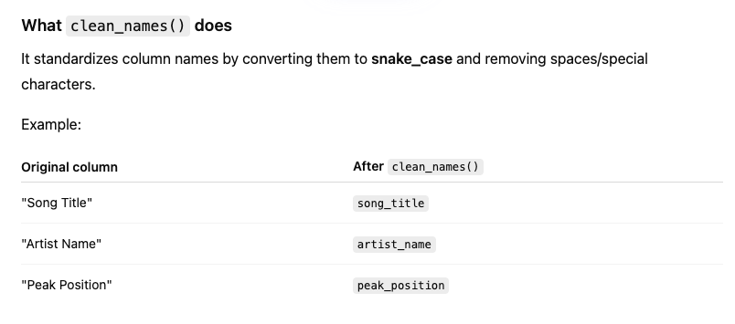
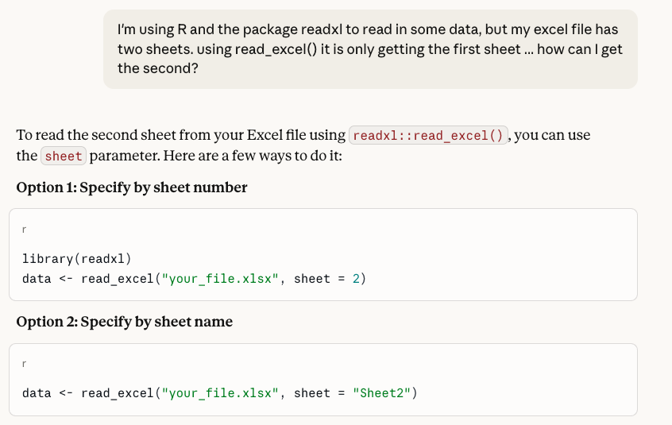

library(tidyverse)01-troubleshooting
Troubleshooting with Chat
Here I want to show how you can take an error and try to find out what is going on with a basic GenAI chat experience.
read_csv("data-original/hot100_assignment.csv") |> clean_names()Browsers
You can try copy/pasting the error into a browser for the AI or Google answer
Error in clean_names(read_csv("data-original/hot100_assignment.csv")) :
could not find function "clean_names"
Chat interfaces
Or you could do similar with ChatGPT, Claude or ChatGPT
Claude answer

ChatGPT

Read the context
In this last instance, ChatGPT went on to give some background about what the package does. This is that extra bit that people who use AI as a crutch instead of a tool fail to get the full benefit.
(The crazy thing is it derived the variables from context or a previous chat because I didn’t supply that.)

Provide a good prompt
It might help to say you are using R or Tidyverse and a package you might need.

You might even provide the data. There is a package called datapasta that can help you make a reproducible sample of your data. I used datapasta::dpaste to format the tibble below. This is also useful if you are asking for help on a forum like Stack Overflow.
I have the following data in R:
tibble::tribble(
~year, ~district, ~name, ~party, ~candvotes,
"2016", 46, "Dukes", "D", 37457,
"2016", 46, "Greeley", "G", 2178,
"2016", 46, "Ludlow", "L", 3445,
"2016", 46, "Nila", "R", 10209
)
And I want new columns that do the following:
- the name of the winning candidate (highest candvotes value).
- the percentage of the total vote that the winning candidate received
- the name of the second highest candidate (using candvotes)
- the percentage of the total vote that second candidate got
- the difference betwen the two percentagesYou can see the full exchange of the above prompt here.